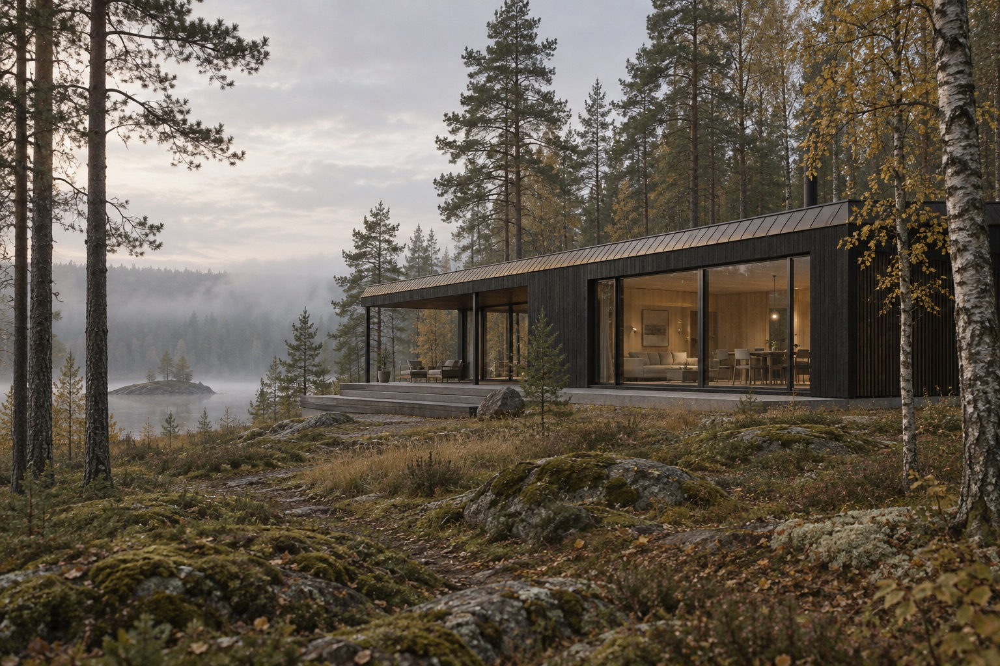
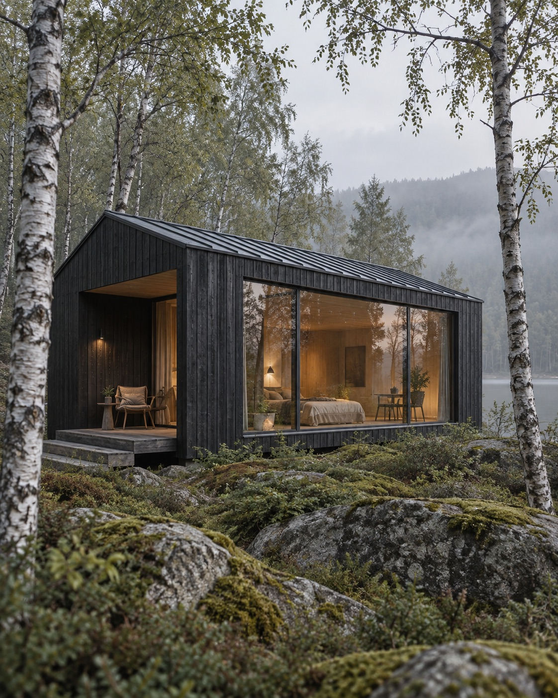
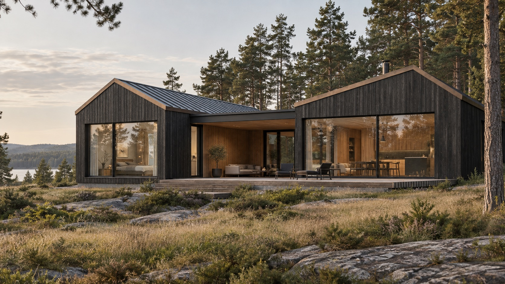
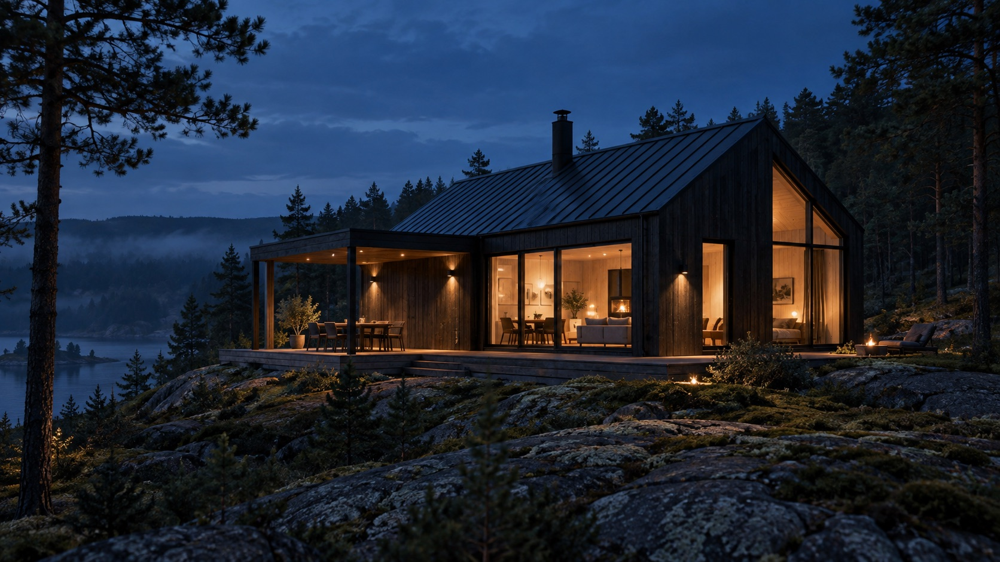
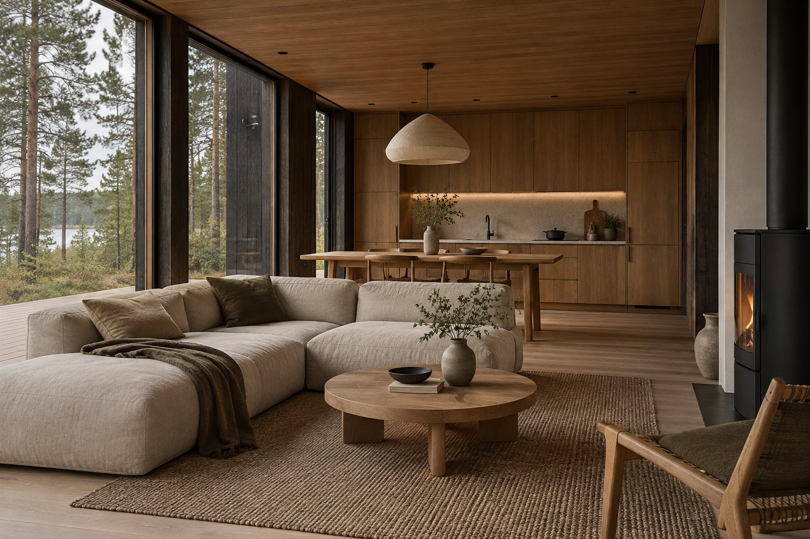
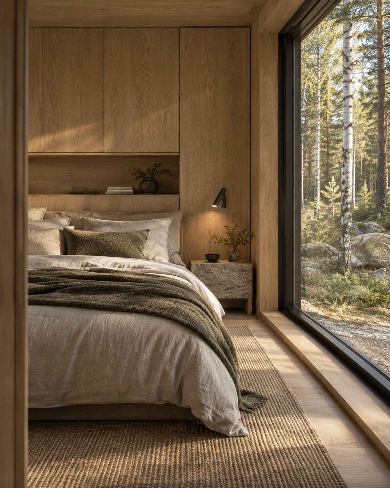
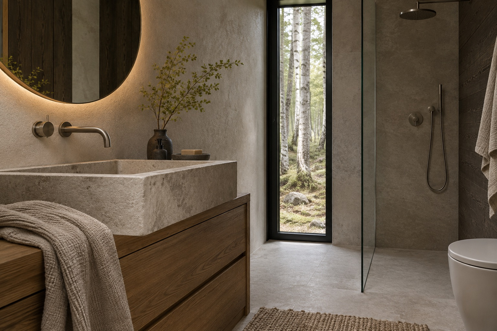

01
NORD 28
28 м²Компактный cabin для отдыха или гостевого дома. Всё необходимое — в точной, собранной форме.
- 1 спальня
- 1 ванная
- Терраса

Architecture / Modular living
Современные модульные дома, созданные для жизни ближе к природе.
01 О студии
NORD CABIN объединяет архитектуру, функциональность и природные материалы, чтобы создать пространство, в котором хочется замедлиться.
Что для нас важно
02 Selected houses
Компактные дома для отдыха, жизни вдвоём и больших выходных с близкими.
Компактный cabin для отдыха или гостевого дома. Всё необходимое — в точной, собранной форме.
Дом для круглогодичного проживания пары или небольшой семьи. Свет, воздух и панорамный вид в центре плана.

03 / ROOM FOR THE LONG WEEKENDПолноценная загородная резиденция, где у каждого есть своё пространство, а общая жизнь собирается вокруг света.
03 Model finder
Демонстрационные ориентиры для концепции. Финальная комплектация зависит от участка и сценария жизни.
NORD 28 / COMPACT CABIN
Пространство для двоих, коротких выходных и долгих завтраков у окна.
04 Designed around life
Форма здесь не спорит с ландшафтом. Она помогает замечать его каждый день.
Большие окна объединяют интерьер с окружающей природой и меняют ощущение площади.
Дерево, металл, стекло и спокойные природные текстуры, к которым хочется прикасаться.
Каждый метр пространства выполняет свою функцию, не создавая визуального шума.
Конструкция и инженерия рассчитаны на комфорт в любое время года.

Architecture / After dark
05 From idea to keys
Вы понимаете, что происходит на каждом этапе — от первого разговора до первого вечера в новом доме.
Обсуждаем участок, задачи, бюджет и будущий сценарий жизни.
Подбираем базовую архитектуру и понятную комплектацию.
Настраиваем материалы, интерьер и дополнительные опции под вас.
Большая часть дома производится в контролируемых заводских условиях.
Модули доставляются на участок подготовленным маршрутом.
Финальная сборка и подготовка дома к эксплуатации.
06 Inside NORD
Тёплое дерево, тактильный текстиль и вид, который не надо включать.



07 Complete by default
Собираем дом как цельную систему — от тепла и света до хранения и деталей, которые делают пространство своим.
08 Questions
Да. Модели проектируются для круглогодичной эксплуатации с утеплением, отоплением и инженерными решениями под конкретный регион.
Решение зависит от геологии участка, рельефа и выбранной модели. После знакомства мы подскажем подходящий тип основания.
Базовая модель адаптируется под ваш сценарий: меняются отделка, комплектация и отдельные планировочные решения.
Готовые модули доставляются на подготовленный участок и собираются на месте монтажной командой.
Да, интерьерную комплектацию можно согласовать вместе с отделкой и инженерией.
Ориентир для базовых моделей — от 60 дней после утверждения комплектации и готовности участка.
Start with a quiet place
Расскажите нам об участке и будущем доме — мы предложим подходящую модель и комплектацию.
Обсудить проект